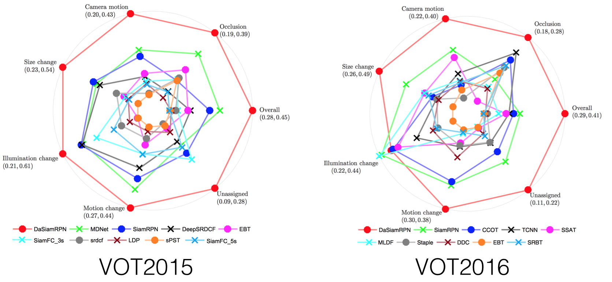

:trophy:News: We won the VOT-18 real-time challenge
:trophy:News: We won the second place in the VOT-18 long-term challenge
DaSiamRPN
This repository includes PyTorch code for reproducing the results on VOT2018.
Distractor-aware Siamese Networks for Visual Object Tracking
Zheng Zhu*, Qiang Wang*, Bo Li*, Wei Wu, Junjie Yan, and Weiming Hu
European Conference on Computer Vision (ECCV), 2018
Introduction
SiamRPN formulates the task of visual tracking as a task of localization and identification simultaneously, initially described in an CVPR2018 spotlight paper. (Slides at CVPR 2018 Spotlight)
DaSiamRPN improves the performances of SiamRPN by (1) introducing an effective sampling strategy to control the imbalanced sample distribution, (2) designing a novel distractor-aware module to perform incremental learning, (3) making a long-term tracking extension. ECCV2018. (Slides at VOT-18 Real-time challenge winners talk)

Prerequisites
CPU: Intel(R) Core(TM) i7-7700 CPU @ 3.60GHz
GPU: NVIDIA GTX1060
- python2.7
- pytorch == 0.3.1
- numpy
- opencv
Pretrained model for SiamRPN
In our tracker, we use an AlexNet variant as our backbone, which is end-to-end trained for visual tracking.
The pretrained model can be downloaded from google drive: SiamRPNBIG.model.
Then, you should copy the pretrained model file SiamRPNBIG.model to the subfolder ‘./code’, so that the tracker can find and load the pretrained_model.
Detailed steps to install the prerequisites
- install pytorch, numpy, opencv following the instructions in the
run_install.sh. Please do not use conda to install. - you can alternatively modify
/PATH/TO/CODE/FOLDER/intracker_SiamRPN.m
If the tracker is ready, you will see the tracking results. (EAO: 0.3827)
Results
All results can be downloaded from Google Drive.
| VOT2015A / R / EAO | VOT2016A / R / EAO | VOT2017 & VOT2018A / R / EAO | OTB2015OP / DP | UAV123AUC / DP | UAV20LAUC / DP | |
|---|---|---|---|---|---|---|
| SiamRPN CVPR2017 | 0.58 / 1.13 / 0.349 | 0.56 / 0.26 / 0.344 | 0.49 / 0.46 / 0.244 | 81.9 / 85.0 | 0.527 / 0.748 | 0.454 / 0.617 |
| DaSiamRPN ECCV2018 | 0.63 / 0.66 / 0.446 | 0.61 / 0.22 / 0.411 | 0.56 / 0.34 / 0.326 | 86.5 / 88.0 | 0.586 / 0.796 | 0.617 / 0.838 |
| DaSiamRPN VOT2018 | - | - | 0.59 / 0.28 / 0.383 | - | - | - |
Demo and Test on OTB2015

To reproduce the reuslts on paper, the pretrained model can be downloaded from Google Drive:
SiamRPNOTB.model.
:zap: :zap: This model is the fastest (~200fps) Siamese Tracker with AUC of 0.655 on OTB2015. :zap: :zap:You must download OTB2015 dataset (download script) at first.
A simple test example.
1 | cd code |
If you want to test the performance on OTB2015, please using the follwing command.
1 | cd code |
License
Licensed under an MIT license.
Citing DaSiamRPN
If you find DaSiamRPN and SiamRPN useful in your research, please consider citing:
1 | @inproceedings{Zhu_2018_ECCV, |